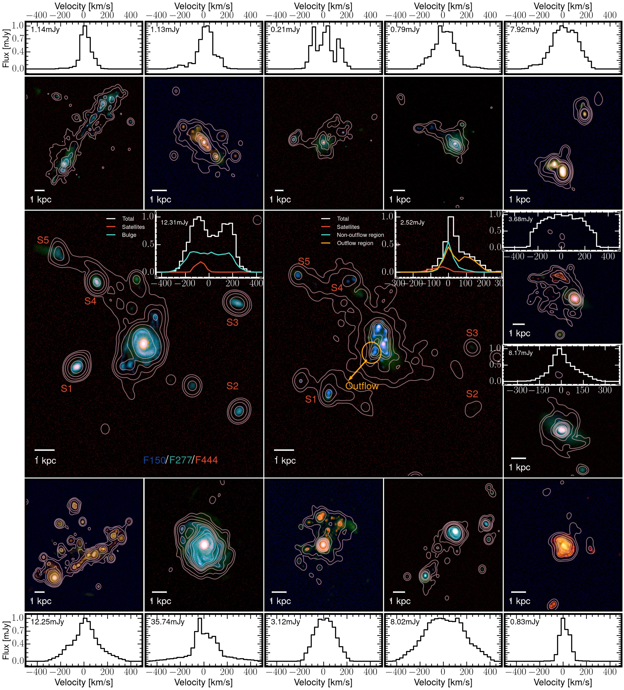
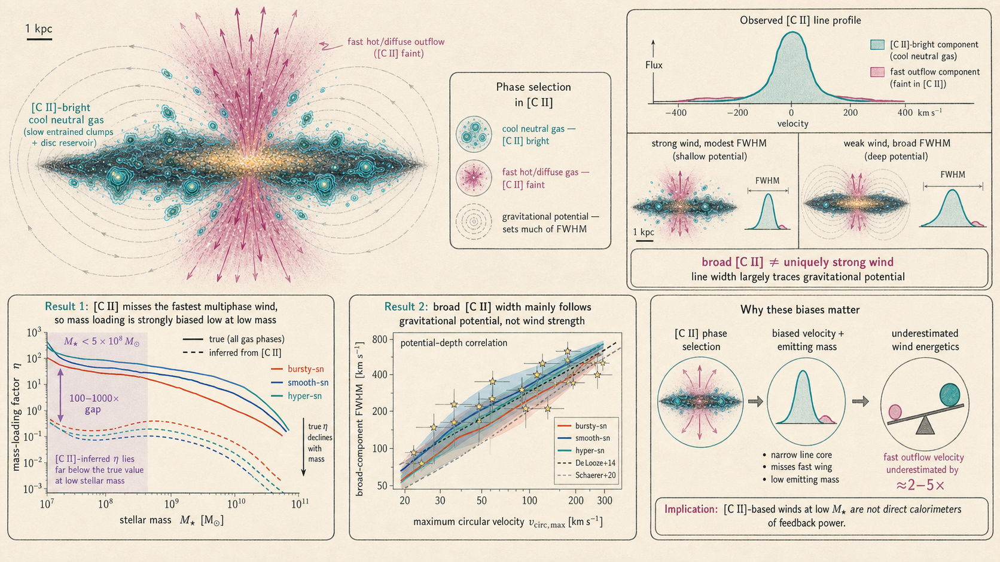

Solve the carbon balance
The post-processing follows equilibrium among C I, C II, and C III using the radiation field stored by the simulation. Collisions with electrons and neutral hydrogen set the [C II] emissivity cell by cell.
Research project 05 · Far-infrared emission
The 158 μm line maps neutral star-forming gas with remarkable reach. SPICE shows that it can expose feedback-shaped structure while overlooking much of a galaxy's fastest outflowing material.

[C II] is routinely used to infer star formation, cold-gas structure, dynamics, and outflows in galaxies observed by ALMA during reionisation. But one line cannot represent every gas phase.
This study synthesises [C II] emission from SPICE galaxies from redshift ten to five, following how feedback changes luminosity, spatial extent, radial motion, spectral line shape, and rotational support. The three feedback models make it possible to separate a robust tracer relation from signals that depend strongly on how supernova energy is delivered.
The central result is deliberately two-sided: [C II] is a useful record of the cool, neutral reservoir and its large-scale organisation, yet it is a poor census of the hot and rapidly moving material that carries much of the wind.
The post-processing follows equilibrium among C I, C II, and C III using the radiation field stored by the simulation. Collisions with electrons and neutral hydrogen set the [C II] emissivity cell by cell.
Each galaxy is placed in a 50 kpc field with roughly 50 pc pixels, 30 km s−1 channels across ±1000 km s−1, a 0.3 arcsec beam, and representative instrumental noise.
Moment maps, radial profiles, and one- to three-component Gaussian fits connect line luminosity and extent to inflow, outflow, disc settling, and the underlying velocity field.

Moving right means a higher star-formation rate; moving up means a brighter [C II] line. The relation is already established by redshift ten and evolves only weakly afterward.
Each column advances in cosmic time, from z = 10 to 7 and 5. Stars mark ALMA observations; coloured bands contain the central 68% of simulated galaxies.
By redshifts seven and five, Bursty-SN galaxies above about 0.1 M⊙ yr−1 sit roughly 0.7–1 dex below the other models and develop substantially more scatter.
The luminosity–SFR sequence is present from redshift ten. At later times, bursty feedback lowers [C II] luminosity by about 0.7–1 dex at fixed SFR for actively star-forming systems and increases the intrinsic scatter.
[C II] emission is strongest in clumpy neutral gas and photodissociation regions. Its luminosity and morphology depend on whether feedback preserves or disrupts the dense neutral reservoir.
Typical [C II]-to-UV radius ratios are roughly two to four. Above 106.5 L⊙, the median ratios are 2.2 ± 0.2, 1.8 ± 0.2, and 1.7 ± 0.4 for Bursty-, Smooth-, and Hyper-SN respectively.
Radially moving gas is ubiquitous and the outflow rate rises with [C II] luminosity, yet the net mass flux at the [C II] radius is usually inward. These galaxies are still being fuelled while feedback ejects material.
The bright [C II] component is centred near −50 km s−1 and is approximately Gaussian, even when the full gas distribution reaches beyond 500 km s−1. In low-mass galaxies, [C II]-based mass-loading estimates can fall short by factors of 100–1000.
Among galaxies above 108 M⊙ at redshift five, about 47% of Smooth-SN and 43% of Hyper-SN systems are classified as discs, compared with 28% under bursty feedback.
Satellite galaxies contribute less than 0.1% of the total [C II] luminosity. A large [C II] halo can instead emerge as feedback redistributes enriched neutral gas beyond the compact UV-bright region.
Smooth- and Hyper-SN can produce the broadest profiles even when their outflows are weaker, because line width also tracks circular velocity and gravitational support.
The stacked Bursty-SN profile strongly prefers a broad second component with an inferred outflow speed near 326 km s−1; Smooth-SN is adequately described by one Gaussian.
Joint ALMA and JWST measurements are needed to follow both the neutral reservoir and the warmer, faster phases. [C II] alone gives a systematically incomplete estimate of feedback-driven mass transport.
[C II] is an excellent map of the cool, enriched, mostly neutral material that surrounds the ultraviolet-bright galaxy. The same selectivity makes it a poor census of the hottest and fastest outflowing gas, so line width or [C II]-based mass loading alone cannot describe the full feedback cycle.
This selection effect has two counter-intuitive observational consequences. At low stellar mass, [C II]-based mass-loading estimates can fall roughly 100–1000 times below the intrinsic multiphase value. Meanwhile, the broadest [C II] components occur in smooth and hypernova systems with weaker outflow signatures because line width follows the depth of the gravitational potential more closely than wind strength. Combining [C II] with ionised-gas lines and absorption diagnostics is therefore necessary to recover multiphase mass transport.
